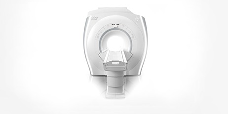
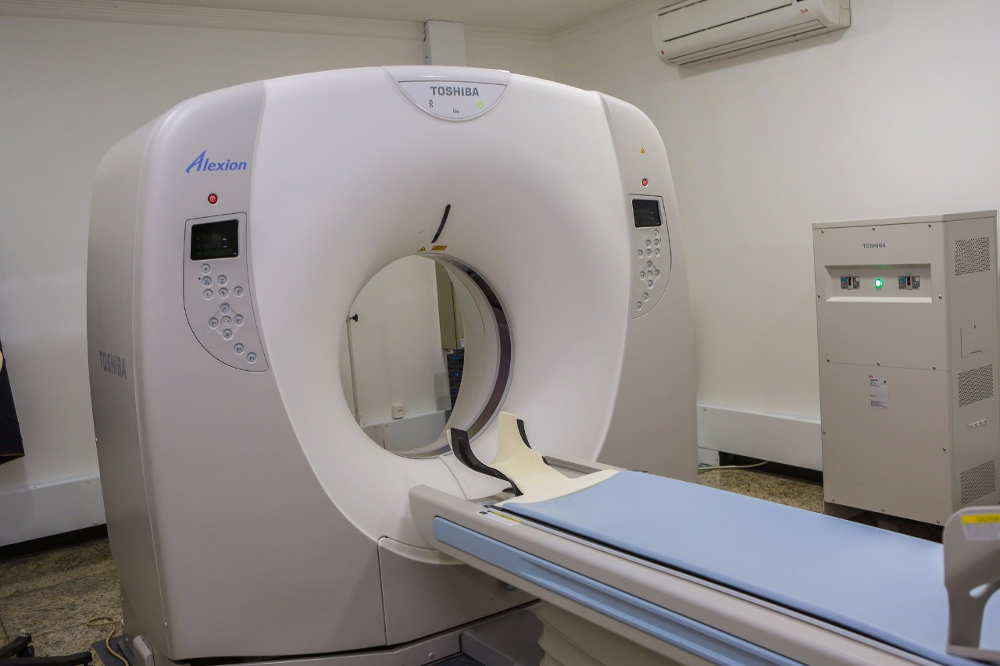

Ressonância Magnética
Ressonancia Magnética é uma técnica que permite determinar propriedades de uma substância através do correlacionamento da energia absorvida contra a frequência, na faixa de megahertz (MHz) do espectromagnético, caracterizando-se como sendo uma espectroscopia. Usa as transições entre níveis de energia rotacionais dos núcleos componentes das espécies (átomos ou íons) contidas na amostra. Isso dâ-se necessariamente sob a influência de um campo magnético e sob a concomitante irradiação de ondas de rádio na faixa de frequências acima citada.
Tomografia Computadorizada Multislice
Podemos definir a tomografia como sendo um método de medida da densidade radiológica dos volumes elementares de um corte. esse método radiológico produz imagens de um corte do corpo com um estudo das densidades, com acuidade 100 vezes maior do que as obtidas em radiografia convencional, estudando a atenuação de um feixe de raios x durante seu trajeto através de um segmento do corpo; no entanto, ela se destingue da radiologia convencional por diversos elementos. A tomografia computadorizada ou computorizada (tc), originalmente apelidada tomografia axial computadorizada/computorizada (tac), é um exame complementar de diagnóstico por imagem, que consiste numa imagem que representa uma secção ou "fatia" do corpo. é obtida através do processamento por computador de informação recolhida após expor o corpo a uma sucessão de raios x.
Raios-X Digital
Os raios-x possibilitaram a criação da primeira técnica que forneceu ao médico uma visão de estruturas internas, sem necessidade de cirurgia. Ele tem a habilidade de atravessar materiais que a luz normal não pode penetrar, inclusive o corpo humano. As radiografias revelam partes diferentes do corpo em sombras de cinza. O tempo do exame varia de acordo com o tipo de estudo. Por exemplo, radiografias simples de ossos, ou de tórax, podem levar menos de cinco minutos. Já uma urografia, que é um exame contrastado para a avaliação dos rins e bexiga, pode levar mais que uma hora.
| Serviços | Preços | Dias da Semana |
|---|---|---|
| Ressonância Magnética | R$ 120,00 | Segunda, Quarta e Sexta |
| R$ 100,00 | Terça e Quinta | |
| Tomografia Computadorizada Multislice | R$ 100,00 | Todos os dias da semana. | Raios-X Digital | R$ 150,00 | Todos os dias da semana. |